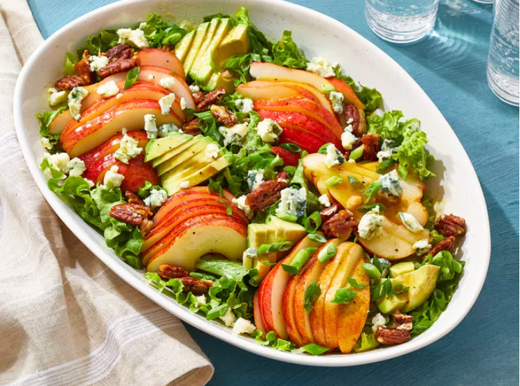

Home
Pear Salad

Description
This pear salad is the best salad I've ever eaten! It's tangy from the blue cheese, fruity from the pears, and crunchy from the caramelized pecans. A drizzle of mustard vinaigrette pulls it all together. Perfect in the fall or for the holidays.
Ingredients
- 1/2 cup pecans
- 1/4 cup white sugar
- 3/4 cup olive oil
- 3 tablespoons red wine vinegar
- 1 tablespoon vegetable oil
- 1 clove garlic, chopped
- 1/2 teaspoon salt
- 1 head green leaf lettuce
- 3 medium pears
- 1 medium avocado
- 1/2 cup green onions
Steps
- Gather all ingredients.
- To make the candied pecans: Combine pecans and sugar in a skillet over medium heat. Cook, stirring gently, until sugar has melted and pecans are caramelized, 5 to 7 minutes.
- Carefully transfer nuts onto a sheet of waxed paper to cool.
- While the nuts are cooling, make the dressing: Whisk oil, vinegar, sugar, mustard, garlic, salt, and pepper together in a bowl.
- To make the salad: Layer lettuce, pears, Roquefort cheese, avocado, and green onions in a large serving bowl. Pour dressing over top.
- Break cooled pecans into pieces and sprinkle over salad.